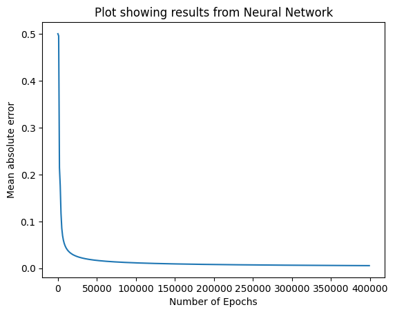

The Activity
Unit 7 · Run 2 November 2026 · Tutor: Dr Elizabeth Oladapo · Evidences learning outcome 2
Activity guidance: watch the unit’s lecturecast, then run three supplied notebooks in order: a simple perceptron, a perceptron for the AND operator, and a multi-layer perceptron using the sigmoid function.
Findings
| Step | What I did | Result |
|---|---|---|
| Corrections (6) | Fixed the weight update, an undefined variable and an error that stopped the run; added a seed and a stopping limit | All 107 code cells ran in order without errors. |
| Exercise 1: simple perceptron | Ran it, then scaled the weights to test the threshold of 1 | Weights of [0.02, 0.01] still fired, with a weighted sum of 1.15. |
| Exercise 2: AND, then OR, NAND and XOR | Trained the same perceptron, with no trainable bias, on four operators, then again with a trainable bias | AND learnt in 6 epochs and OR in 10; NAND (1 of 4 correct) and XOR (2 of 4) were not learnt in 100. With a trainable bias, NAND was learnt in 6 epochs; XOR still was not. |
| Exercise 3: multi-layer perceptron on XOR | Trained for 400,000 epochs, measured saturation, then trained from five other starting weights | Final error 0.0057 with outputs rounding to 0, 1, 1, 0; by the end, the largest output slope was 0.0068 against a maximum of 0.25. All five other runs (100,000 epochs each) got 4 of 4 right. |

A single perceptron draws one straight line, so it could not learn XOR (Goodfellow, Bengio and Courville, 2016). Its NAND failure had a different cause: with threshold 1 and no trainable bias, it always outputs 0 for (0, 0); with a trainable bias it learnt NAND in 6 epochs. The multi-layer perceptron learnt XOR, but its sigmoid hidden units saturated, as Goodfellow, Bengio and Courville (2016) warn. Four rows leave nothing unseen to test, so this shows learning, not generalisation.
Evidence
I ran the notebook in Google Colab. Its first code cell records the run, and all 107 code cells completed without errors:
Run by Anne Dayer (student 39359) in Google Colab on 02 November 2026 at 10:37 UTCAI Acknowledgement
Codex was used to assist in identifying appropriate code solutions and to proofread and refine the code I produced. Claude and Grammarly supported proofreading, language refinement, and formatting of my written text. All final decisions, analyses, interpretations, conclusions, and recommendations are my own.
References
Goodfellow, I., Bengio, Y. and Courville, A. (2016) Deep Learning. Cambridge, MA: MIT Press. Available at: https://www.deeplearningbook.org/ (Accessed: 2 November 2026).